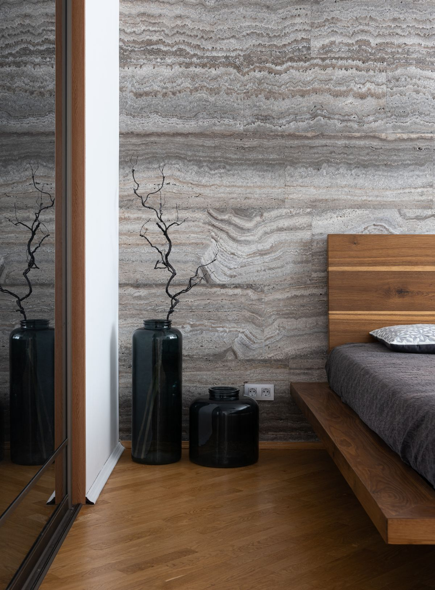

Selling requires expert knowledge and someone who works tirelessly on your behalf. Our creative marketing, professional media, and strong negotiation consistently deliver results.
Across 337 closed transactions since 2008, our sellers have averaged 98 percent of list price with a median of 35 days on market. We have sold homes in slower markets, kept clients fully informed throughout, and never asked them to accept a lowball offer to get it done.
We assess your home’s current equity, study comparable sales, and set a pricing strategy designed to attract the right buyers.
Staging guidance, professional photography, social and digital placement, and targeted outreach put your home in front of qualified buyers.
We negotiate firmly on your behalf and manage every document and deadline straight through to a clean close.
A successful sale starts well before your home goes on the market. We begin by understanding your goals, evaluating the property and current market, and developing a strategy for pricing, preparation and presentation. From there, we manage marketing, buyer feedback, offers, negotiations and the transaction through closing.
Homes sold by Glasshouse Collective have a median of 35 days on market. Every home and market is different, and timing depends on factors including location, price, condition, competition and current buyer demand. Our focus is not simply on selling quickly, but on positioning your home to attract the right buyers and achieve the strongest possible outcome.
Your home’s value is influenced by much more than square footage and recent sales. We consider location, condition, improvements, competing inventory, buyer demand and comparable properties to develop a pricing strategy based on today’s market.
Every home requires its own marketing strategy. We combine thoughtful preparation and presentation with professional photography and video, digital and social marketing, targeted outreach, print when appropriate, and the reach of the Compass network. We continually evaluate buyer response and market activity, adjusting our strategy when needed to keep your property competitively positioned.
The cost of selling a home varies depending on the property and the terms of the transaction. Before you list, we will walk you through our compensation, anticipated closing costs and other potential expenses so you have a clear understanding of the estimated proceeds from your sale.
Not every home needs a major renovation before going on the market. We help you determine which improvements, repairs and presentation changes are worth considering based on your home, your timeline and the current market. From staging and styling to larger updates when appropriate, our goal is to focus your time and resources where they can make the greatest impact.

Reach out today and we will build a marketing plan around your home and your timeline.
(602) 686-6662